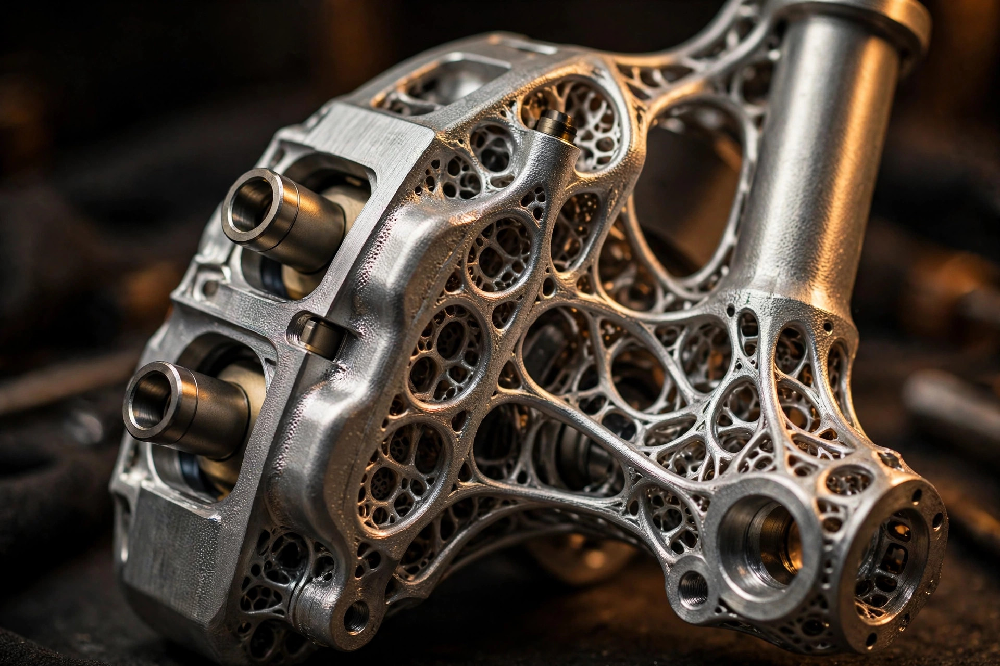

The Upright Is the Caliper: Czinger's BrakeNode Deletes the Brake's Worst Interface
The 21C Spyder's headline is 1,250 horsepower with no roof. The engineering story sits behind the front wheels: a single 3D-printed aluminum node that merges the suspension upright, the brake caliper, and the hydraulic plumbing into one part, and cuts stopping distance by 15 percent by deleting the joints everyone else bolts together.

Every brake caliper on every car you have ever driven is a guest in someone else's house. It bolts to a bracket, the bracket bolts to the upright, and a flexible hose drapes across the gap to feed it fluid. Three parts, two bolted joints, one hose, all of them compromises. At The Quail in August, Czinger showed a car that deletes the arrangement entirely. On the 21C Spyder, the caliper is the upright now.
The part is called BrakeNode, and Czinger describes it as the world's first fully integrated, topology-optimized, additively manufactured brake assembly. That sentence contains three marketing words and one genuine idea. Strip the adjectives and what remains is this: the suspension upright, the brake caliper, and the hydraulic fluid passages are a single 3D-printed component in Czinger's proprietary Z301 aluminum alloy. No bracket, no external brake lines: one node where three systems used to meet.
Interfaces are where brakes go to die
To see why this matters, follow the load. When you stand on the pedal of a 1,250-horsepower car at 205 mph, the pads bite a carbon-ceramic rotor and the resulting torque has to get into the chassis somehow. The path runs from pad to caliper body, through the caliper's mounting bolts into a bracket, through the bracket's bolts into the upright, and finally into the suspension. Every bolted joint in that chain is a small spring, a small tolerance stack, and a small fatigue site. Engineers who chase brake feel spend careers managing those joints; Czinger fired them.
The bracket joint is the worst of the three, and it fails in the most annoying way possible. Under hard braking the caliper tries to rotate with the rotor, the bracket flexes by microns, and the pads load unevenly across their faces. Uneven pressure means tapered pad wear, longer beds of hot spots on the rotor, and stopping distances that grow as the hardware ages. A stiffer bracket helps, which is why racing calipers use massive radial mounts and dowels, but deleting the bracket helps more: when the caliper cannot flex independently of the upright because they are the same piece of metal, pressure distributes across the pads the way the piston layout intended, not the way the bracket allowed.
That is the mechanism behind Czinger's headline claim, and it is worth stating plainly because the company buries it. BrakeNode cuts stopping distance by up to 15 percent, measured against the 21C's previous setup, in combination with new brake calibrations. The stiffness contributes, the calibration contributes, and Czinger does not split the credit. Read the claim as a system result, not a parts result.
What the numbers actually say
Against conventional brake structures, Czinger claims BrakeNode increases stiffness and reduces unsprung mass by up to 30 percent each. The honest comparison is narrower and more impressive: measured against the 21C's existing additively manufactured upright and separate caliper, which was already class-leading, the integrated node saves another 1.5 pounds of unsprung mass per corner, 6 pounds across the car. Unsprung mass is the most expensive weight on a vehicle, the kind the wheel has to accelerate up and down over every bump, so a pound and a half per corner is real damper response and real tire contact, not a brochure rounding error.
Up to 37 percent of the node is hollow. That figure deserves a pause, because it describes the actual dividend of additive manufacturing. A machined or cast upright is mostly solid with pockets cut where the cutter can reach. A printed node puts material only along computed load paths and leaves the rest as reinforced void, which is how you get 30 percent more stiffness from less mass. Bone does it without a trademark, and Czinger's "BioLogic" branding is marketing for a structural logic older than mammals.
The hydraulics get the same treatment. Internal passages printed through the node feed each piston directly, which deletes the external flex lines and their failure modes: chafing, interference, a fitting loosened by vibration. It also deletes a failure mode most drivers never think about, which is the caliper separating from its mount. With no mount, there is nothing to separate. Czinger pressure-tested the node to 500 bar, eight times the car's normal operating pressure, which speaks to the static strength of both the geometry and the Z301 alloy. Static strength only; more on what that does not prove later.
Titanium pistons and the heat budget
Heat is the quiet killer of brake feel, and the piston is where it crosses from the pad into the fluid. BrakeNode runs titanium pistons up front, six per caliper according to MotorTrend's reporting, a material choice Czinger says trickled down from Formula 1. The physics is straightforward: Ti-6Al-4V conducts heat at roughly 7 watts per meter-kelvin against about 16 for stainless steel, so less pad heat reaches the hydraulic fluid through the piston body. Czinger claims fluid temperatures 15 percent lower than with stainless pistons under sustained use, which is the difference between a firm pedal on lap eight and a long one.
The rears get aluminum pistons, four per caliper, because the rear brakes do less work and aluminum is lighter. This is the kind of asymmetric decision that signals actual thermal budgeting rather than material theater: titanium where the heat is, aluminum where it is not. The rotors are carbon-ceramic, 410 millimeters front and 390 rear, on machined bells lightened with pockets and holes for cooling airflow. None of the friction materials are exotic by hypercar standards. The exotic part is everything holding them.
Tuning the squeal out of the print
My favorite detail in Czinger's release is the least glamorous one. BrakeNode's modal shapes were optimized to reduce squeal and roughness, meaning the resonant frequencies of the structure were designed away from the frequencies that excited brake noise. This is only practical because the part is monolithic.
Squeal is a vibration problem, and vibration prediction lives or dies on knowing your boundary conditions. A bolted caliper-bracket-upright assembly has joints whose damping is nonlinear, preload-dependent, and different on every car after a year of heat cycles. Modeling it accurately is miserable. A single printed node has no joints, so its modes are whatever the geometry says they are, which means you can move them in software before ever printing. Additive manufacturing does not just enable the shape. It makes the shape's behavior predictable enough to tune. That is a deeper argument for integration than stiffness or mass, and Czinger nearly whispers it.
The unobtanium service question
Integration has a classic failure mode, and it is not engineering. It is the service bay. When three systems become one part, replacing any of them means replacing all of them, and a cracked upright-caliper is a far more expensive afternoon than a cracked upright plus a reused caliper. Czinger's answer is genuinely thoughtful: pads swap through the top of the structure, rotors tilt out from the side without disconnecting the caliper, and a drain plug at the bottom simplifies fluid changes. The node was designed for hands as well as loads.
Whether that matters depends on who touches the car. Thirty Spyders will be built, and BrakeNode is offered as a retrofit to existing 21C HDF and VMax cars, which expands the service population by dozens, not thousands. Nobody is doing pad swaps at a chain tire shop. The serviceability story is really a manufacturing story: Czinger is demonstrating that integrated AM structures can be designed for maintenance at all, which is the objection every OEM raises before adopting them. The Spyder is the demo; the customers are future licensees.
NeuralNode applies the same logic to the cockpit
Worth a brief note because it confirms the philosophy: the Spyder also debuts NeuralNode, a single exoskeletal structure replacing the conventional multi-piece dashboard. Instrument panel, HVAC, steering mount, and drive controls fold into one print, and cabin air flows from the HVAC unit through hollow channels inside the structure to forward-facing vents tuned for open-top driving. Same move as BrakeNode, different system. Find the interfaces, delete them, spend the savings on function. It is a design language now, not a one-off.
What we don't know yet
Honesty requires the caveats, and there are several. I have not seen a BrakeNode in person, and as far as public evidence goes, neither has anyone outside Czinger. Every figure in this article is the manufacturer's, and some of them bundle multiple changes: the 15 percent stopping-distance claim mixes hardware with new brake calibrations, and the stiffness and mass claims use different baselines in the same paragraph.
The 500-bar pressure test proves static strength, not life. The real test of a printed aluminum brake component is thermal fatigue: thousands of cycles of rotors glowing and cooling while the node soaks and sheds heat, with laser-fused aluminum's porosity and directional grain along for the ride. Czinger publishes no fatigue data and no public material properties for Z301, so the alloy's endurance limit is a trade secret and the node's service life is a claim. For thirty cars with factory support, that is acceptable. For the OEM licensing future Czinger clearly wants, it is the entire negotiation.
There is also the repairability asymmetry. A curb strike that cracks a conventional upright costs an upright. The same strike on a BrakeNode costs an upright, a caliper, and the hydraulics, because they are one part now. Integration concentrates risk exactly as it concentrates function. That is not an argument against integration, merely the price, which should be stated alongside the savings.
None of which diminishes the idea. The 21C program already put a topology-optimized, additively manufactured gearbox casing into production, which this site covered when the coupe launched. BrakeNode extends the same thinking to the most abused bolted joint on the car. Somewhere in a future mass-market EV, a printed knuckle will carry its caliper the same way, and nobody will call it BioLogic. They will call it cheaper, which is how these things always go: the hypercar debugs it, the commodity car inherits it.
| Spec | 21C Spyder / BrakeNode |
|---|---|
| System | BrakeNode: upright + caliper + hydraulic passages, single AM component |
| Material | Z301 proprietary aluminum alloy; up to 37% hollow reinforced structure |
| Stiffness / unsprung mass | +30% stiffness, -30% unsprung mass vs conventional (mfr claim) |
| Mass saving vs prior 21C setup | 1.5 lb per corner, 6 lb total |
| Stopping distance | Up to 15% shorter (with new brake calibrations; mfr claim) |
| Pressure rating | Tested to 500 bar (8x normal operating pressure) |
| Pistons | Front: titanium (6-piston); rear: aluminum (4-piston) |
| Rotors | Carbon-ceramic, 410 mm front / 390 mm rear, machined lightened bells |
| Powertrain | 2.88L twin-turbo V8 (750 hp, 11,000 rpm) + 3-motor hybrid; 1,250 hp combined |
| Performance | 0-60 mph 1.9 s; quarter mile 8.7 s; 205 mph top speed |
| Downforce | 1,482 kg at 150 mph roofless (most of any open-top road car, mfr claim) |
| Production | 30 units; BrakeNode standard, retrofit offered for 21C HDF and VMax |
Sources
- Czinger Vehicles, "Czinger Unveils 21C Spyder: The BioLogic Engineered Spyder," official release, August 2026. BrakeNode specifications, Z301 alloy, 500-bar test, NeuralNode, powertrain figures.
- MotorTrend, "2028 Czinger 21C Spyder First Look: Hypercar Price, Power, Tech," August 2026. Piston counts (six front titanium, four rear aluminum), hydraulic pressure behavior, retrofit availability.
- Evo, "New Czinger 21C Spyder: central seat, 11,000rpm V8 and no roof," August 2026. Per-corner mass saving, downforce context, printed suspension background.
- Autocar, "Czinger 21C Spyder: extreme drop-top is 1250bhp hybrid," August 2026. Downforce figures, no-reinforcement roofless structure, production run.
- TopSpeed, "Czinger 21C Spyder: 1,250 HP," August 2026. BrakeNode system summary, titanium piston cooling claim.
- CarBuzz, "The Most Amazing Convertible At Monterey Is This Locally Built 1,250-HP Hypercar," August 14, 2026. Debut context at Monterey Car Week.